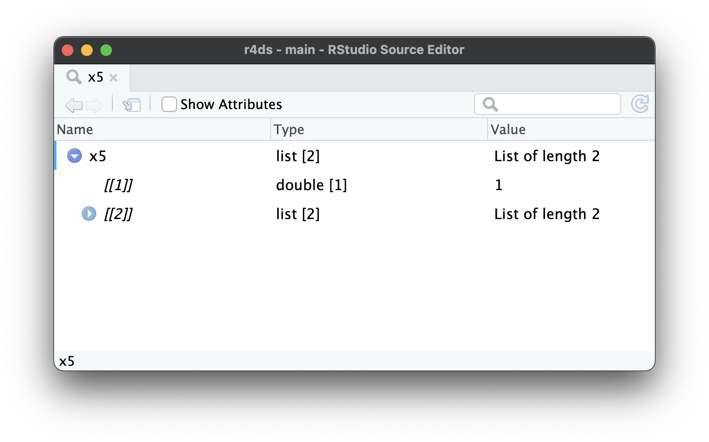
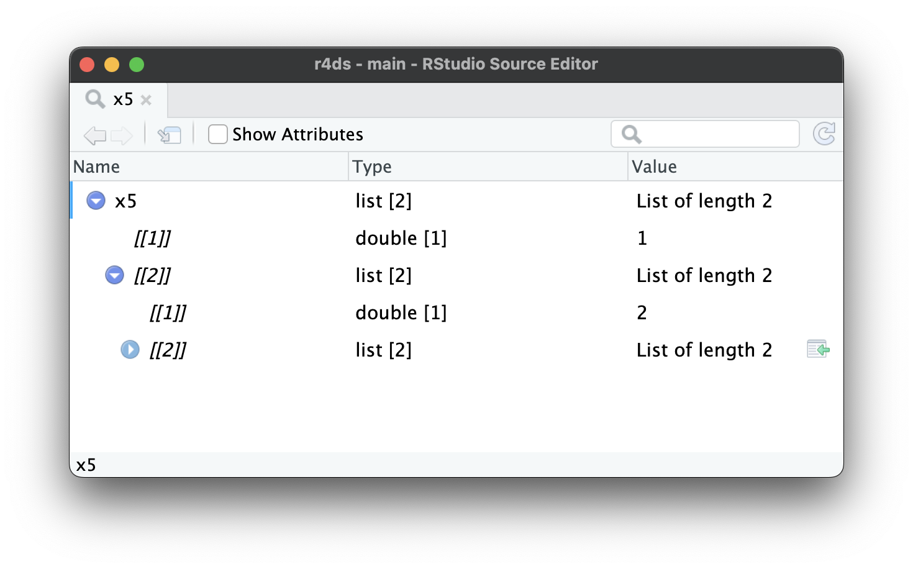
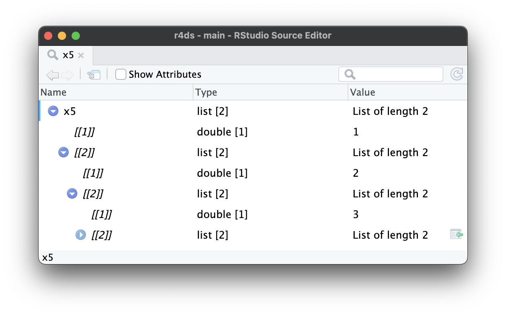

library(tidyverse)
library(repurrrsive)
library(jsonlite)Hierarchical data
Introduction
In this chapter, you’ll learn the art of data rectangling: taking data that is fundamentally hierarchical, or tree-like, and converting it into a rectangular data frame made up of rows and columns. This is important because hierarchical data is surprisingly common, especially when working with data that comes from the web.
To learn about rectangling, you’ll need to first learn about lists, the data structure that makes hierarchical data possible. Then you’ll learn about two crucial tidyr functions: tidyr::unnest_longer() and tidyr::unnest_wider(). We’ll then show you a few case studies, applying these simple functions again and again to solve real problems. We’ll finish off by talking about JSON, the most frequent source of hierarchical datasets and a common format for data exchange on the web.
Prerequisites
In this chapter, we’ll use many functions from tidyr, a core member of the tidyverse. We’ll also use repurrrsive to provide some interesting datasets for rectangling practice, and we’ll finish by using jsonlite to read JSON files into R lists.
Lists
So far you’ve worked with data frames that contain simple vectors like integers, numbers, characters, date-times, and factors. These vectors are simple because they’re homogeneous: every element is of the same data type. If you want to store elements of different types in the same vector, you’ll need a list, which you create with list():
x1 <- list(1:4, "a", TRUE)
x1
#> [[1]]
#> [1] 1 2 3 4
#>
#> [[2]]
#> [1] "a"
#>
#> [[3]]
#> [1] TRUEIt’s often convenient to name the components, or children, of a list, which you can do in the same way as naming the columns of a tibble:
x2 <- list(a = 1:2, b = 1:3, c = 1:4)
x2
#> $a
#> [1] 1 2
#>
#> $b
#> [1] 1 2 3
#>
#> $c
#> [1] 1 2 3 4Even for these very simple lists, printing takes up quite a lot of space. A useful alternative is str(), which generates a compact display of the structure, de-emphasizing the contents:
str(x1)
#> List of 3
#> $ : int [1:4] 1 2 3 4
#> $ : chr "a"
#> $ : logi TRUE
str(x2)
#> List of 3
#> $ a: int [1:2] 1 2
#> $ b: int [1:3] 1 2 3
#> $ c: int [1:4] 1 2 3 4As you can see, str() displays each child of the list on its own line. It displays the name, if present, then an abbreviation of the type, then the first few values.
Hierarchy
Lists can contain any type of object, including other lists. This makes them suitable for representing hierarchical (tree-like) structures:
x3 <- list(list(1, 2), list(3, 4))
str(x3)
#> List of 2
#> $ :List of 2
#> ..$ : num 1
#> ..$ : num 2
#> $ :List of 2
#> ..$ : num 3
#> ..$ : num 4This is notably different to c(), which generates a flat vector:
c(c(1, 2), c(3, 4))
#> [1] 1 2 3 4
x4 <- c(list(1, 2), list(3, 4))
str(x4)
#> List of 4
#> $ : num 1
#> $ : num 2
#> $ : num 3
#> $ : num 4As lists get more complex, str() gets more useful, as it lets you see the hierarchy at a glance:
x5 <- list(1, list(2, list(3, list(4, list(5)))))
str(x5)
#> List of 2
#> $ : num 1
#> $ :List of 2
#> ..$ : num 2
#> ..$ :List of 2
#> .. ..$ : num 3
#> .. ..$ :List of 2
#> .. .. ..$ : num 4
#> .. .. ..$ :List of 1
#> .. .. .. ..$ : num 5As lists get even larger and more complex, str() eventually starts to fail, and you’ll need to switch to View()1. Figure 1 shows the result of calling View(x5). The viewer starts by showing just the top level of the list, but you can interactively expand any of the components to see more, as in Figure 2. RStudio will also show you the code you need to access that element, as in Figure 3. We’ll come back to how this code works in ?@sec-subset-one.



x5[[2]][[2]][[2]].
List-columns
Lists can also live inside a tibble, where we call them list-columns. List-columns are useful because they allow you to place objects in a tibble that wouldn’t usually belong in there. In particular, list-columns are used a lot in the tidymodels ecosystem, because they allow you to store things like model outputs or resamples in a data frame.
Here’s a simple example of a list-column:
df <- tibble(
x = 1:2,
y = c("a", "b"),
z = list(list(1, 2), list(3, 4, 5))
)
df
#> # A tibble: 2 × 3
#> x y z
#> <int> <chr> <list>
#> 1 1 a <list [2]>
#> 2 2 b <list [3]>There’s nothing special about lists in a tibble; they behave like any other column:
df |>
filter(x == 1)
#> # A tibble: 1 × 3
#> x y z
#> <int> <chr> <list>
#> 1 1 a <list [2]>Computing with list-columns is harder, but that’s because computing with lists is harder in general; we’ll come back to that in ?@sec-iteration. In this chapter, we’ll focus on unnesting list-columns out into regular variables so you can use your existing tools on them.
The default print method just displays a rough summary of the contents. The list column could be arbitrarily complex, so there’s no good way to print it. If you want to see it, you’ll need to pull out just the one list-column and apply one of the techniques that you’ve learned above, like df |> pull(z) |> str() or df |> pull(z) |> View().
Base R
It’s possible to put a list in a column of a data.frame, but it’s a lot fiddlier because data.frame() treats a list as a list of columns:
data.frame(x = list(1:3, 3:5))
#> x.1.3 x.3.5
#> 1 1 3
#> 2 2 4
#> 3 3 5You can force data.frame() to treat a list as a list of rows by wrapping it in list I(), but the result doesn’t print particularly well:
data.frame(
x = I(list(1:2, 3:5)),
y = c("1, 2", "3, 4, 5")
)
#> x y
#> 1 1, 2 1, 2
#> 2 3, 4, 5 3, 4, 5It’s easier to use list-columns with tibbles because tibble() treats lists like vectors and the print method has been designed with lists in mind.
Unnesting
Now that you’ve learned the basics of lists and list-columns, let’s explore how you can turn them back into regular rows and columns. Here we’ll use very simple sample data so you can get the basic idea; in the next section we’ll switch to real data.
List-columns tend to come in two basic forms: named and unnamed. When the children are named, they tend to have the same names in every row. For example, in df1, every element of list-column y has two elements named a and b. Named list-columns naturally unnest into columns: each named element becomes a new named column.
df1 <- tribble(
~x, ~y,
1, list(a = 11, b = 12),
2, list(a = 21, b = 22),
3, list(a = 31, b = 32),
)When the children are unnamed, the number of elements tends to vary from row-to-row. For example, in df2, the elements of list-column y are unnamed and vary in length from one to three. Unnamed list-columns naturally unnest into rows: you’ll get one row for each child.
df2 <- tribble(
~x, ~y,
1, list(11, 12, 13),
2, list(21),
3, list(31, 32),
)tidyr provides two functions for these two cases: unnest_wider() and unnest_longer(). The following sections explain how they work.
unnest_wider()
When each row has the same number of elements with the same names, like df1, it’s natural to put each component into its own column with unnest_wider():
df1 |>
unnest_wider(y)
#> # A tibble: 3 × 3
#> x a b
#> <dbl> <dbl> <dbl>
#> 1 1 11 12
#> 2 2 21 22
#> 3 3 31 32By default, the names of the new columns come exclusively from the names of the list elements, but you can use the names_sep argument to request that they combine the column name and the element name. This is useful for disambiguating repeated names.
df1 |>
unnest_wider(y, names_sep = "_")
#> # A tibble: 3 × 3
#> x y_a y_b
#> <dbl> <dbl> <dbl>
#> 1 1 11 12
#> 2 2 21 22
#> 3 3 31 32unnest_longer()
When each row contains an unnamed list, it’s most natural to put each element into its own row with unnest_longer():
df2 |>
unnest_longer(y)
#> # A tibble: 6 × 2
#> x y
#> <dbl> <dbl>
#> 1 1 11
#> 2 1 12
#> 3 1 13
#> 4 2 21
#> 5 3 31
#> 6 3 32Note how x is duplicated for each element inside of y: we get one row of output for each element inside the list-column. But what happens if one of the elements is empty, as in the following example?
df6 <- tribble(
~x, ~y,
"a", list(1, 2),
"b", list(3),
"c", list()
)
df6 |> unnest_longer(y)
#> # A tibble: 3 × 2
#> x y
#> <chr> <dbl>
#> 1 a 1
#> 2 a 2
#> 3 b 3We get zero rows in the output, so the row effectively disappears. If you want to preserve that row, adding NA in y, set keep_empty = TRUE.
Inconsistent types
What happens if you unnest a list-column that contains different types of vector? For example, take the following dataset where the list-column y contains two numbers, a character, and a logical, which can’t normally be mixed in a single column.
df4 <- tribble(
~x, ~y,
"a", list(1),
"b", list("a", TRUE, 5)
)unnest_longer() always keeps the set of columns unchanged, while changing the number of rows. So what happens? How does unnest_longer() produce five rows while keeping everything in y?
df4 |>
unnest_longer(y)
#> # A tibble: 4 × 2
#> x y
#> <chr> <list>
#> 1 a <dbl [1]>
#> 2 b <chr [1]>
#> 3 b <lgl [1]>
#> 4 b <dbl [1]>As you can see, the output contains a list-column, but every element of the list-column contains a single element. Because unnest_longer() can’t find a common type of vector, it keeps the original types in a list-column. You might wonder if this breaks the commandment that every element of a column must be the same type. It doesn’t: every element is a list, even though the contents are of different types.
Dealing with inconsistent types is challenging and the details depend on the precise nature of the problem and your goals, but you’ll most likely need tools from ?@sec-iteration.
Other functions
tidyr has a few other useful rectangling functions that we’re not going to cover in this book:
unnest_auto()automatically picks betweenunnest_longer()andunnest_wider()based on the structure of the list-column. It’s great for rapid exploration, but ultimately it’s a bad idea because it doesn’t force you to understand how your data is structured, and makes your code harder to understand.unnest()expands both rows and columns. It’s useful when you have a list-column that contains a 2d structure like a data frame, which you don’t see in this book, but you might encounter if you use the tidymodels ecosystem.
These functions are good to know about as you might encounter them when reading other people’s code or tackling rarer rectangling challenges yourself.
Exercises
What happens when you use
unnest_wider()with unnamed list-columns likedf2? What argument is now necessary? What happens to missing values?What happens when you use
unnest_longer()with named list-columns likedf1? What additional information do you get in the output? How can you suppress that extra detail?From time-to-time you encounter data frames with multiple list-columns with aligned values. For example, in the following data frame, the values of
yandzare aligned (i.e.yandzwill always have the same length within a row, and the first value ofycorresponds to the first value ofz). What happens if you apply twounnest_longer()calls to this data frame? How can you preserve the relationship betweenxandy? (Hint: carefully read the docs).df4 <- tribble( ~x, ~y, ~z, "a", list("y-a-1", "y-a-2"), list("z-a-1", "z-a-2"), "b", list("y-b-1", "y-b-2", "y-b-3"), list("z-b-1", "z-b-2", "z-b-3") )
Case studies
The main difference between the simple examples we used above and real data is that real data typically contains multiple levels of nesting that require multiple calls to unnest_longer() and/or unnest_wider(). To show that in action, this section works through three real rectangling challenges using datasets from the repurrrsive package.
Very wide data
We’ll start with gh_repos. This is a list that contains data about a collection of GitHub repositories retrieved using the GitHub API. It’s a very deeply nested list so it’s difficult to show the structure in this book; we recommend exploring a little on your own with View(gh_repos) before we continue.
gh_repos is a list, but our tools work with list-columns, so we’ll begin by putting it into a tibble. We call this column json for reasons we’ll get to later.
repos <- tibble(json = gh_repos)
repos
#> # A tibble: 6 × 1
#> json
#> <list>
#> 1 <list [30]>
#> 2 <list [30]>
#> 3 <list [30]>
#> 4 <list [26]>
#> 5 <list [30]>
#> 6 <list [30]>This tibble contains 6 rows, one row for each child of gh_repos. Each row contains an unnamed list with either 26 or 30 rows. Since these are unnamed, we’ll start with unnest_longer() to put each child in its own row:
repos |>
unnest_longer(json)
#> # A tibble: 176 × 1
#> json
#> <list>
#> 1 <named list [68]>
#> 2 <named list [68]>
#> 3 <named list [68]>
#> 4 <named list [68]>
#> 5 <named list [68]>
#> 6 <named list [68]>
#> # ℹ 170 more rowsAt first glance, it might seem like we haven’t improved the situation: while we have more rows (176 instead of 6) each element of json is still a list. However, there’s an important difference: now each element is a named list so we can use unnest_wider() to put each element into its own column:
repos |>
unnest_longer(json) |>
unnest_wider(json)
#> # A tibble: 176 × 68
#> id name full_name owner private html_url
#> <int> <chr> <chr> <list> <lgl> <chr>
#> 1 61160198 after gaborcsardi/after <named list> FALSE https://github…
#> 2 40500181 argufy gaborcsardi/argu… <named list> FALSE https://github…
#> 3 36442442 ask gaborcsardi/ask <named list> FALSE https://github…
#> 4 34924886 baseimports gaborcsardi/base… <named list> FALSE https://github…
#> 5 61620661 citest gaborcsardi/cite… <named list> FALSE https://github…
#> 6 33907457 clisymbols gaborcsardi/clis… <named list> FALSE https://github…
#> # ℹ 170 more rows
#> # ℹ 62 more variables: description <chr>, fork <lgl>, url <chr>, …This has worked but the result is a little overwhelming: there are so many columns that tibble doesn’t even print all of them! We can see them all with names(); and here we look at the first 10:
repos |>
unnest_longer(json) |>
unnest_wider(json) |>
names() |>
head(10)
#> [1] "id" "name" "full_name" "owner" "private"
#> [6] "html_url" "description" "fork" "url" "forks_url"Let’s pull out a few that look interesting:
repos |>
unnest_longer(json) |>
unnest_wider(json) |>
select(id, full_name, owner, description)
#> # A tibble: 176 × 4
#> id full_name owner description
#> <int> <chr> <list> <chr>
#> 1 61160198 gaborcsardi/after <named list [17]> Run Code in the Backgro…
#> 2 40500181 gaborcsardi/argufy <named list [17]> Declarative function ar…
#> 3 36442442 gaborcsardi/ask <named list [17]> Friendly CLI interactio…
#> 4 34924886 gaborcsardi/baseimports <named list [17]> Do we get warnings for …
#> 5 61620661 gaborcsardi/citest <named list [17]> Test R package and repo…
#> 6 33907457 gaborcsardi/clisymbols <named list [17]> Unicode symbols for CLI…
#> # ℹ 170 more rowsYou can use this to work back to understand how gh_repos was structured: each child was a GitHub user containing a list of up to 30 GitHub repositories that they created.
owner is another list-column, and since it contains a named list, we can use unnest_wider() to get at the values:
repos |>
unnest_longer(json) |>
unnest_wider(json) |>
select(id, full_name, owner, description) |>
unnest_wider(owner)
#> Error in `unnest_wider()`:
#> ! Can't duplicate names between the affected columns and the original
#> data.
#> ✖ These names are duplicated:
#> ℹ `id`, from `owner`.
#> ℹ Use `names_sep` to disambiguate using the column name.
#> ℹ Or use `names_repair` to specify a repair strategy.Uh oh, this list column also contains an id column and we can’t have two id columns in the same data frame. As suggested, lets use names_sep to resolve the problem:
repos |>
unnest_longer(json) |>
unnest_wider(json) |>
select(id, full_name, owner, description) |>
unnest_wider(owner, names_sep = "_")
#> # A tibble: 176 × 20
#> id full_name owner_login owner_id owner_avatar_url
#> <int> <chr> <chr> <int> <chr>
#> 1 61160198 gaborcsardi/after gaborcsardi 660288 https://avatars.gith…
#> 2 40500181 gaborcsardi/argufy gaborcsardi 660288 https://avatars.gith…
#> 3 36442442 gaborcsardi/ask gaborcsardi 660288 https://avatars.gith…
#> 4 34924886 gaborcsardi/baseimports gaborcsardi 660288 https://avatars.gith…
#> 5 61620661 gaborcsardi/citest gaborcsardi 660288 https://avatars.gith…
#> 6 33907457 gaborcsardi/clisymbols gaborcsardi 660288 https://avatars.gith…
#> # ℹ 170 more rows
#> # ℹ 15 more variables: owner_gravatar_id <chr>, owner_url <chr>, …This gives another wide dataset, but you can get the sense that owner appears to contain a lot of additional data about the person who “owns” the repository.
Relational data
Nested data is sometimes used to represent data that we’d usually spread across multiple data frames. For example, take got_chars which contains data about characters that appear in the Game of Thrones books and TV series. Like gh_repos it’s a list, so we start by turning it into a list-column of a tibble:
chars <- tibble(json = got_chars)
chars
#> # A tibble: 30 × 1
#> json
#> <list>
#> 1 <named list [18]>
#> 2 <named list [18]>
#> 3 <named list [18]>
#> 4 <named list [18]>
#> 5 <named list [18]>
#> 6 <named list [18]>
#> # ℹ 24 more rowsThe json column contains named elements, so we’ll start by widening it:
chars |>
unnest_wider(json)
#> # A tibble: 30 × 18
#> url id name gender culture born
#> <chr> <int> <chr> <chr> <chr> <chr>
#> 1 https://www.anapio… 1022 Theon Greyjoy Male "Ironborn" "In 278 AC or …
#> 2 https://www.anapio… 1052 Tyrion Lannist… Male "" "In 273 AC, at…
#> 3 https://www.anapio… 1074 Victarion Grey… Male "Ironborn" "In 268 AC or …
#> 4 https://www.anapio… 1109 Will Male "" ""
#> 5 https://www.anapio… 1166 Areo Hotah Male "Norvoshi" "In 257 AC or …
#> 6 https://www.anapio… 1267 Chett Male "" "At Hag's Mire"
#> # ℹ 24 more rows
#> # ℹ 12 more variables: died <chr>, alive <lgl>, titles <list>, …And selecting a few columns to make it easier to read:
characters <- chars |>
unnest_wider(json) |>
select(id, name, gender, culture, born, died, alive)
characters
#> # A tibble: 30 × 7
#> id name gender culture born died
#> <int> <chr> <chr> <chr> <chr> <chr>
#> 1 1022 Theon Greyjoy Male "Ironborn" "In 278 AC or 27… ""
#> 2 1052 Tyrion Lannister Male "" "In 273 AC, at C… ""
#> 3 1074 Victarion Greyjoy Male "Ironborn" "In 268 AC or be… ""
#> 4 1109 Will Male "" "" "In 297 AC, at…
#> 5 1166 Areo Hotah Male "Norvoshi" "In 257 AC or be… ""
#> 6 1267 Chett Male "" "At Hag's Mire" "In 299 AC, at…
#> # ℹ 24 more rows
#> # ℹ 1 more variable: alive <lgl>This dataset contains also many list-columns:
chars |>
unnest_wider(json) |>
select(id, where(is.list))
#> # A tibble: 30 × 8
#> id titles aliases allegiances books povBooks tvSeries playedBy
#> <int> <list> <list> <list> <list> <list> <list> <list>
#> 1 1022 <chr [2]> <chr [4]> <chr [1]> <chr [3]> <chr> <chr> <chr>
#> 2 1052 <chr [2]> <chr [11]> <chr [1]> <chr [2]> <chr> <chr> <chr>
#> 3 1074 <chr [2]> <chr [1]> <chr [1]> <chr [3]> <chr> <chr> <chr>
#> 4 1109 <chr [1]> <chr [1]> <NULL> <chr [1]> <chr> <chr> <chr>
#> 5 1166 <chr [1]> <chr [1]> <chr [1]> <chr [3]> <chr> <chr> <chr>
#> 6 1267 <chr [1]> <chr [1]> <NULL> <chr [2]> <chr> <chr> <chr>
#> # ℹ 24 more rowsLet’s explore the titles column. It’s an unnamed list-column, so we’ll unnest it into rows:
chars |>
unnest_wider(json) |>
select(id, titles) |>
unnest_longer(titles)
#> # A tibble: 59 × 2
#> id titles
#> <int> <chr>
#> 1 1022 Prince of Winterfell
#> 2 1022 Lord of the Iron Islands (by law of the green lands)
#> 3 1052 Acting Hand of the King (former)
#> 4 1052 Master of Coin (former)
#> 5 1074 Lord Captain of the Iron Fleet
#> 6 1074 Master of the Iron Victory
#> # ℹ 53 more rowsYou might expect to see this data in its own table because it would be easy to join to the characters data as needed. Let’s do that, which requires little cleaning: removing the rows containing empty strings and renaming titles to title since each row now only contains a single title.
titles <- chars |>
unnest_wider(json) |>
select(id, titles) |>
unnest_longer(titles) |>
filter(titles != "") |>
rename(title = titles)
titles
#> # A tibble: 52 × 2
#> id title
#> <int> <chr>
#> 1 1022 Prince of Winterfell
#> 2 1022 Lord of the Iron Islands (by law of the green lands)
#> 3 1052 Acting Hand of the King (former)
#> 4 1052 Master of Coin (former)
#> 5 1074 Lord Captain of the Iron Fleet
#> 6 1074 Master of the Iron Victory
#> # ℹ 46 more rowsYou could imagine creating a table like this for each of the list-columns, then using joins to combine them with the character data as you need it.
Deeply nested
We’ll finish off these case studies with a list-column that’s very deeply nested and requires repeated rounds of unnest_wider() and unnest_longer() to unravel: gmaps_cities. This is a two column tibble containing five city names and the results of using Google’s geocoding API to determine their location:
gmaps_cities
#> # A tibble: 5 × 2
#> city json
#> <chr> <list>
#> 1 Houston <named list [2]>
#> 2 Washington <named list [2]>
#> 3 New York <named list [2]>
#> 4 Chicago <named list [2]>
#> 5 Arlington <named list [2]>json is a list-column with internal names, so we start with an unnest_wider():
gmaps_cities |>
unnest_wider(json)
#> # A tibble: 5 × 3
#> city results status
#> <chr> <list> <chr>
#> 1 Houston <list [1]> OK
#> 2 Washington <list [2]> OK
#> 3 New York <list [1]> OK
#> 4 Chicago <list [1]> OK
#> 5 Arlington <list [2]> OKThis gives us the status and the results. We’ll drop the status column since they’re all OK; in a real analysis, you’d also want to capture all the rows where status != "OK" and figure out what went wrong. results is an unnamed list, with either one or two elements (we’ll see why shortly) so we’ll unnest it into rows:
gmaps_cities |>
unnest_wider(json) |>
select(-status) |>
unnest_longer(results)
#> # A tibble: 7 × 2
#> city results
#> <chr> <list>
#> 1 Houston <named list [5]>
#> 2 Washington <named list [5]>
#> 3 Washington <named list [5]>
#> 4 New York <named list [5]>
#> 5 Chicago <named list [5]>
#> 6 Arlington <named list [5]>
#> # ℹ 1 more rowNow results is a named list, so we’ll use unnest_wider():
locations <- gmaps_cities |>
unnest_wider(json) |>
select(-status) |>
unnest_longer(results) |>
unnest_wider(results)
locations
#> # A tibble: 7 × 6
#> city address_components formatted_address geometry
#> <chr> <list> <chr> <list>
#> 1 Houston <list [4]> Houston, TX, USA <named list [4]>
#> 2 Washington <list [2]> Washington, USA <named list [4]>
#> 3 Washington <list [4]> Washington, DC, USA <named list [4]>
#> 4 New York <list [3]> New York, NY, USA <named list [4]>
#> 5 Chicago <list [4]> Chicago, IL, USA <named list [4]>
#> 6 Arlington <list [4]> Arlington, TX, USA <named list [4]>
#> # ℹ 1 more row
#> # ℹ 2 more variables: place_id <chr>, types <list>Now we can see why two cities got two results: Washington matched both Washington state and Washington, DC, and Arlington matched Arlington, Virginia and Arlington, Texas.
There are a few different places we could go from here. We might want to determine the exact location of the match, which is stored in the geometry list-column:
locations |>
select(city, formatted_address, geometry) |>
unnest_wider(geometry)
#> # A tibble: 7 × 6
#> city formatted_address bounds location location_type
#> <chr> <chr> <list> <list> <chr>
#> 1 Houston Houston, TX, USA <named list [2]> <named list> APPROXIMATE
#> 2 Washington Washington, USA <named list [2]> <named list> APPROXIMATE
#> 3 Washington Washington, DC, USA <named list [2]> <named list> APPROXIMATE
#> 4 New York New York, NY, USA <named list [2]> <named list> APPROXIMATE
#> 5 Chicago Chicago, IL, USA <named list [2]> <named list> APPROXIMATE
#> 6 Arlington Arlington, TX, USA <named list [2]> <named list> APPROXIMATE
#> # ℹ 1 more row
#> # ℹ 1 more variable: viewport <list>That gives us new bounds (a rectangular region) and location (a point). We can unnest location to see the latitude (lat) and longitude (lng):
locations |>
select(city, formatted_address, geometry) |>
unnest_wider(geometry) |>
unnest_wider(location)
#> # A tibble: 7 × 7
#> city formatted_address bounds lat lng location_type
#> <chr> <chr> <list> <dbl> <dbl> <chr>
#> 1 Houston Houston, TX, USA <named list [2]> 29.8 -95.4 APPROXIMATE
#> 2 Washington Washington, USA <named list [2]> 47.8 -121. APPROXIMATE
#> 3 Washington Washington, DC, USA <named list [2]> 38.9 -77.0 APPROXIMATE
#> 4 New York New York, NY, USA <named list [2]> 40.7 -74.0 APPROXIMATE
#> 5 Chicago Chicago, IL, USA <named list [2]> 41.9 -87.6 APPROXIMATE
#> 6 Arlington Arlington, TX, USA <named list [2]> 32.7 -97.1 APPROXIMATE
#> # ℹ 1 more row
#> # ℹ 1 more variable: viewport <list>Extracting the bounds requires a few more steps:
locations |>
select(city, formatted_address, geometry) |>
unnest_wider(geometry) |>
# focus on the variables of interest
select(!location:viewport) |>
unnest_wider(bounds)
#> # A tibble: 7 × 4
#> city formatted_address northeast southwest
#> <chr> <chr> <list> <list>
#> 1 Houston Houston, TX, USA <named list [2]> <named list [2]>
#> 2 Washington Washington, USA <named list [2]> <named list [2]>
#> 3 Washington Washington, DC, USA <named list [2]> <named list [2]>
#> 4 New York New York, NY, USA <named list [2]> <named list [2]>
#> 5 Chicago Chicago, IL, USA <named list [2]> <named list [2]>
#> 6 Arlington Arlington, TX, USA <named list [2]> <named list [2]>
#> # ℹ 1 more rowWe then rename southwest and northeast (the corners of the rectangle) so we can use names_sep to create short but evocative names:
locations |>
select(city, formatted_address, geometry) |>
unnest_wider(geometry) |>
select(!location:viewport) |>
unnest_wider(bounds) |>
rename(ne = northeast, sw = southwest) |>
unnest_wider(c(ne, sw), names_sep = "_")
#> # A tibble: 7 × 6
#> city formatted_address ne_lat ne_lng sw_lat sw_lng
#> <chr> <chr> <dbl> <dbl> <dbl> <dbl>
#> 1 Houston Houston, TX, USA 30.1 -95.0 29.5 -95.8
#> 2 Washington Washington, USA 49.0 -117. 45.5 -125.
#> 3 Washington Washington, DC, USA 39.0 -76.9 38.8 -77.1
#> 4 New York New York, NY, USA 40.9 -73.7 40.5 -74.3
#> 5 Chicago Chicago, IL, USA 42.0 -87.5 41.6 -87.9
#> 6 Arlington Arlington, TX, USA 32.8 -97.0 32.6 -97.2
#> # ℹ 1 more rowNote how we unnest two columns simultaneously by supplying a vector of variable names to unnest_wider().
Once you’ve discovered the path to get to the components you’re interested in, you can extract them directly using another tidyr function, hoist():
locations |>
select(city, formatted_address, geometry) |>
hoist(
geometry,
ne_lat = c("bounds", "northeast", "lat"),
sw_lat = c("bounds", "southwest", "lat"),
ne_lng = c("bounds", "northeast", "lng"),
sw_lng = c("bounds", "southwest", "lng"),
)If these case studies have whetted your appetite for more real-life rectangling, you can see a few more examples in vignette("rectangling", package = "tidyr").
Exercises
Roughly estimate when
gh_reposwas created. Why can you only roughly estimate the date?The
ownercolumn ofgh_repocontains a lot of duplicated information because each owner can have many repos. Can you construct anownersdata frame that contains one row for each owner? (Hint: doesdistinct()work withlist-cols?)Follow the steps used for
titlesto create similar tables for the aliases, allegiances, books, and TV series for the Game of Thrones characters.Explain the following code line-by-line. Why is it interesting? Why does it work for
got_charsbut might not work in general?tibble(json = got_chars) |> unnest_wider(json) |> select(id, where(is.list)) |> pivot_longer( where(is.list), names_to = "name", values_to = "value" ) |> unnest_longer(value)In
gmaps_cities, what doesaddress_componentscontain? Why does the length vary between rows? Unnest it appropriately to figure it out. (Hint:typesalways appears to contain two elements. Doesunnest_wider()make it easier to work with thanunnest_longer()?) .
JSON
All of the case studies in the previous section were sourced from wild-caught JSON. JSON is short for javascript object notation and is the way that most web APIs return data. It’s important to understand it because while JSON and R’s data types are pretty similar, there isn’t a perfect 1-to-1 mapping, so it’s good to understand a bit about JSON if things go wrong.
Data types
JSON is a simple format designed to be easily read and written by machines, not humans. It has six key data types. Four of them are scalars:
- The simplest type is a null (
null) which plays the same role asNAin R. It represents the absence of data. - A string is much like a string in R, but must always use double quotes.
- A number is similar to R’s numbers: they can use integer (e.g., 123), decimal (e.g., 123.45), or scientific (e.g., 1.23e3) notation. JSON doesn’t support
Inf,-Inf, orNaN. - A boolean is similar to R’s
TRUEandFALSE, but uses lowercasetrueandfalse.
JSON’s strings, numbers, and booleans are pretty similar to R’s character, numeric, and logical vectors. The main difference is that JSON’s scalars can only represent a single value. To represent multiple values you need to use one of the two remaining types: arrays and objects.
Both arrays and objects are similar to lists in R; the difference is whether or not they’re named. An array is like an unnamed list, and is written with []. For example [1, 2, 3] is an array containing 3 numbers, and [null, 1, "string", false] is an array that contains a null, a number, a string, and a boolean. An object is like a named list, and is written with {}. The names (keys in JSON terminology) are strings, so must be surrounded by quotes. For example, {"x": 1, "y": 2} is an object that maps x to 1 and y to 2.
Note that JSON doesn’t have any native way to represent dates or date-times, so they’re often stored as strings, and you’ll need to use readr::parse_date() or readr::parse_datetime() to turn them into the correct data structure. Similarly, JSON’s rules for representing floating point numbers in JSON are a little imprecise, so you’ll also sometimes find numbers stored in strings. Apply readr::parse_double() as needed to get the correct variable type.
jsonlite
To convert JSON into R data structures, we recommend the jsonlite package, by Jeroen Ooms. We’ll use only two jsonlite functions: read_json() and parse_json(). In real life, you’ll use read_json() to read a JSON file from disk. For example, the repurrsive package also provides the source for gh_user as a JSON file and you can read it with read_json():
# A path to a json file inside the package:
gh_users_json()
#> [1] "/Library/Frameworks/R.framework/Versions/4.4-arm64/Resources/library/repurrrsive/extdata/gh_users.json"
# Read it with read_json()
gh_users2 <- read_json(gh_users_json())
# Check it's the same as the data we were using previously
identical(gh_users, gh_users2)
#> [1] TRUEIn this book, we’ll also use parse_json(), since it takes a string containing JSON, which makes it good for generating simple examples. To get started, here are three simple JSON datasets, starting with a number, then putting a few numbers in an array, then putting that array in an object:
str(parse_json('1'))
#> int 1
str(parse_json('[1, 2, 3]'))
#> List of 3
#> $ : int 1
#> $ : int 2
#> $ : int 3
str(parse_json('{"x": [1, 2, 3]}'))
#> List of 1
#> $ x:List of 3
#> ..$ : int 1
#> ..$ : int 2
#> ..$ : int 3jsonlite has another important function called fromJSON(). We don’t use it here because it performs automatic simplification (simplifyVector = TRUE). This often works well, particularly in simple cases, but we think you’re better off doing the rectangling yourself so you know exactly what’s happening and can more easily handle the most complicated nested structures.
Starting the rectangling process
In most cases, JSON files contain a single top-level array, because they’re designed to provide data about multiple “things”, e.g., multiple pages, or multiple records, or multiple results. In this case, you’ll start your rectangling with tibble(json) so that each element becomes a row:
json <- '[
{"name": "John", "age": 34},
{"name": "Susan", "age": 27}
]'
df <- tibble(json = parse_json(json))
df
#> # A tibble: 2 × 1
#> json
#> <list>
#> 1 <named list [2]>
#> 2 <named list [2]>
df |>
unnest_wider(json)
#> # A tibble: 2 × 2
#> name age
#> <chr> <int>
#> 1 John 34
#> 2 Susan 27In rarer cases, the JSON file consists of a single top-level JSON object, representing one “thing”. In this case, you’ll need to kick off the rectangling process by wrapping it in a list, before you put it in a tibble.
json <- '{
"status": "OK",
"results": [
{"name": "John", "age": 34},
{"name": "Susan", "age": 27}
]
}
'
df <- tibble(json = list(parse_json(json)))
df
#> # A tibble: 1 × 1
#> json
#> <list>
#> 1 <named list [2]>
df |>
unnest_wider(json) |>
unnest_longer(results) |>
unnest_wider(results)
#> # A tibble: 2 × 3
#> status name age
#> <chr> <chr> <int>
#> 1 OK John 34
#> 2 OK Susan 27Alternatively, you can reach inside the parsed JSON and start with the bit that you actually care about:
df <- tibble(results = parse_json(json)$results)
df |>
unnest_wider(results)
#> # A tibble: 2 × 2
#> name age
#> <chr> <int>
#> 1 John 34
#> 2 Susan 27Exercises
Rectangle the
df_colanddf_rowbelow. They represent the two ways of encoding a data frame in JSON.json_col <- parse_json(' { "x": ["a", "x", "z"], "y": [10, null, 3] } ') json_row <- parse_json(' [ {"x": "a", "y": 10}, {"x": "x", "y": null}, {"x": "z", "y": 3} ] ') df_col <- tibble(json = list(json_col)) df_row <- tibble(json = json_row)
Summary
In this chapter, you learned what lists are, how you can generate them from JSON files, and how to turn them into rectangular data frames. Surprisingly we only need two new functions: unnest_longer() to put list elements into rows and unnest_wider() to put list elements into columns. It doesn’t matter how deeply nested the list-column is; all you need to do is repeatedly call these two functions.
JSON is the most common data format returned by web APIs. What happens if the website doesn’t have an API, but you can see data you want on the website? That’s the topic of the next chapter: web scraping, extracting data from HTML webpages.
This is an RStudio feature.↩︎